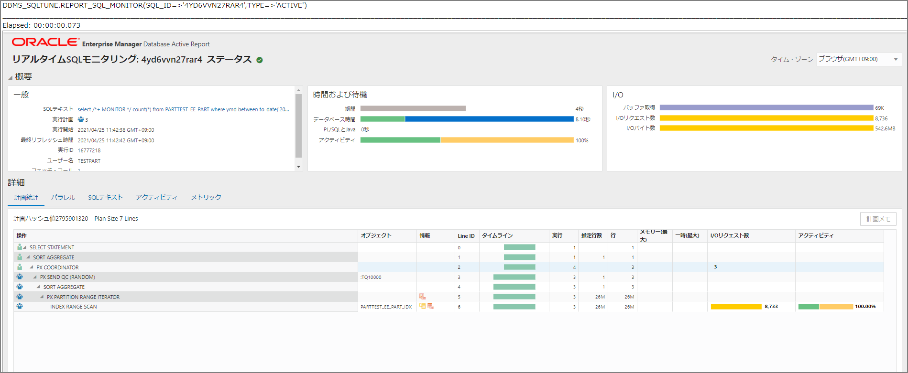

OracleのリアルタイムSQL監視
チューニングや解析時にAWR、ASHと並んで便利だと思っているリアルタイムSQL監視のメモ。実行中のSQLを自動で監視し、詳細な統計を取得出来る。パラレルクエリ、もしくは5秒以上のSQLであれば自動で収集されているが、ヒント文を付与することでも本機能を使用することが出来る。TEXTタイプとACTIVEタイプがある。
SQL実行
exec rdsadmin.rdsadmin_util.flush_shared_pool;
exec rdsadmin.rdsadmin_util.flush_buffer_cache;
set autotrace on
set timing on
select /*+ MONITOR */ count(*) from PARTTEST_EE_PART where ymd between to_date('2017/05/01 11:00:00','YYYY/MM/DD HH24:MI:SS') and to_date('2019/05/11 12:00:00','YYYY/MM/DD HH24:MI:SS');
SQL_IDの確認
SELECT sql_id, hash_value, substr(sql_text,1,40) sql_text
FROM v$sql
WHERE sql_text like 'select /*+ MONITOR */ count(*) from%';
リアルタイムSQL監視の実行
SET LONG 1000000
SET LONGC 1000000
SET LINESIZE 300;
SET PAGESIZE 1000;
VAR c_rep CLOB;
EXEC :c_rep := DBMS_SQLTUNE.REPORT_SQL_MONITOR(sql_id => '4yd6vvn27rar4', TYPE => 'TEXT');
PRINT c_rep;
実行ログ
SQL> select dbms_sqltune.report_sql_monitor(sql_id => '4yd6vvn27rar4', TYPE => 'TEXT') from dual;
DBMS_SQLTUNE.REPORT_SQL_MONITOR(SQL_ID=>'4YD6VVN27RAR4',TYPE=>'TEXT')
SQL Monitoring Report
SQL Text
------------------------------
select /*+ MONITOR */ count(*) from PARTTEST_EE_PART where ymd between to_date('2017/05/01 11:00:00','YYYY/MM/DD HH24:MI:SS') and to_date('2019/05/11 12:00:00','YYYY/MM/DD HH24:MI:SS')
Global Information
------------------------------
Status : DONE (ALL ROWS)
Instance ID : 1
Session : TESTPART (1291:39506)
SQL ID : 4yd6vvn27rar4
SQL Execution ID : 16777217
Execution Started : 04/25/2021 02:33:34
First Refresh Time : 04/25/2021 02:33:34
Last Refresh Time : 04/25/2021 02:33:39
Duration : 5s
Module/Action : SQLcl/-
Service : SYS$USERS
Program : SQLcl
Fetch Calls : 1
Global Stats
=================================================
| Elapsed | Cpu | Other | Fetch | Buffer |
| Time(s) | Time(s) | Waits(s) | Calls | Gets |
=================================================
| 10 | 10 | 0.00 | 1 | 68826 |
=================================================
Parallel Execution Details (DOP=3 , Servers Allocated=3)
==========================================================================================
| Name | Type | Server# | Elapsed | Cpu | Other | Buffer | Wait Events |
| | | | Time(s) | Time(s) | Waits(s) | Gets | (sample #) |
==========================================================================================
| PX Coordinator | QC | | 0.00 | 0.00 | | 9 | |
| p000 | Set 1 | 1 | 4.92 | 4.92 | | 33963 | |
| p001 | Set 1 | 2 | 3.08 | 3.08 | | 22698 | |
| p002 | Set 1 | 3 | 2.12 | 2.12 | 0.00 | 12156 | |
==========================================================================================
SQL Plan Monitoring Details (Plan Hash Value=2795901320)
========================================================================================================================================================
| Id | Operation | Name | Rows | Cost | Time | Start | Execs | Rows | Activity | Activity Detail |
| | | | (Estim) | | Active(s) | Active | | (Actual) | (%) | (# samples) |
========================================================================================================================================================
| 0 | SELECT STATEMENT | | | | 1 | +5 | 1 | 1 | | |
| 1 | SORT AGGREGATE | | 1 | | 1 | +5 | 1 | 1 | | |
| 2 | PX COORDINATOR | | | | 1 | +5 | 4 | 3 | | |
| 3 | PX SEND QC (RANDOM) | :TQ10000 | 1 | | 4 | +2 | 3 | 3 | | |
| 4 | SORT AGGREGATE | | 1 | | 4 | +2 | 3 | 3 | | |
| 5 | PX PARTITION RANGE ITERATOR | | 26M | 69179 | 6 | +0 | 3 | 26M | | |
| 6 | INDEX RANGE SCAN | PARTTEST_EE_PART_IDX | 26M | 69179 | 6 | +0 | 3 | 26M | | |
========================================================================================================================================================
Elapsed: 00:00:00.045
リアルタイムSQL監視の実行
spool sqlmon_active.html
select dbms_sqltune.report_sql_monitor(sql_id => '4yd6vvn27rar4', TYPE => 'ACTIVE') from dual;
spool off
レポート

参照
複雑なSQLチューニングもラクにする！SQL監視機能とは https://www.oracle.com/technetwork/jp/ondemand/db-basic/d-16-ssqltuning-1448439-ja.pdf